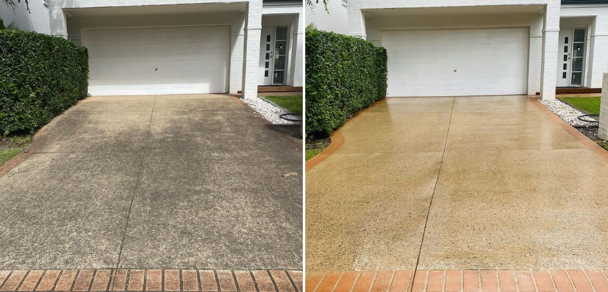
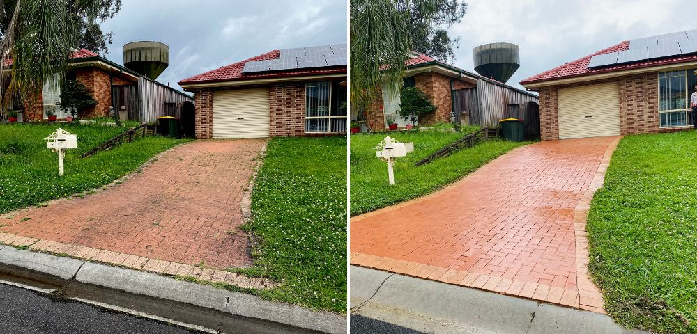
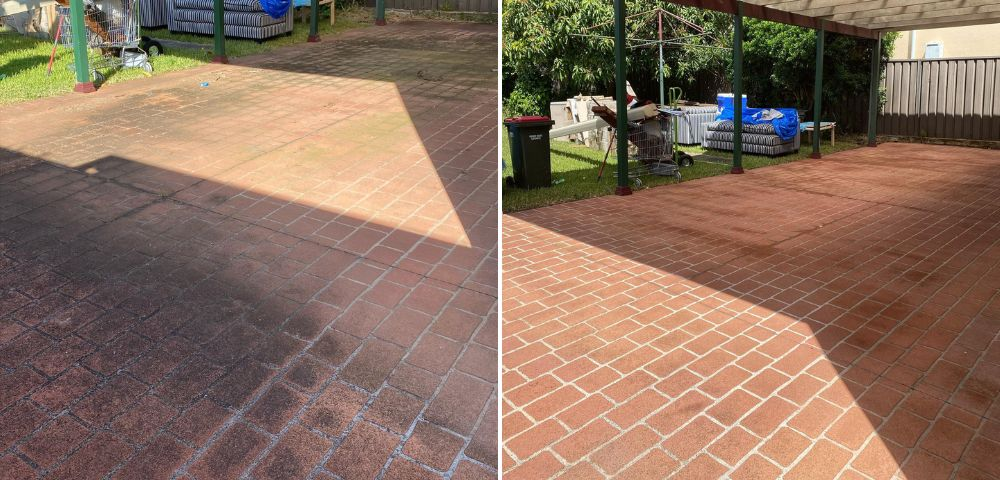
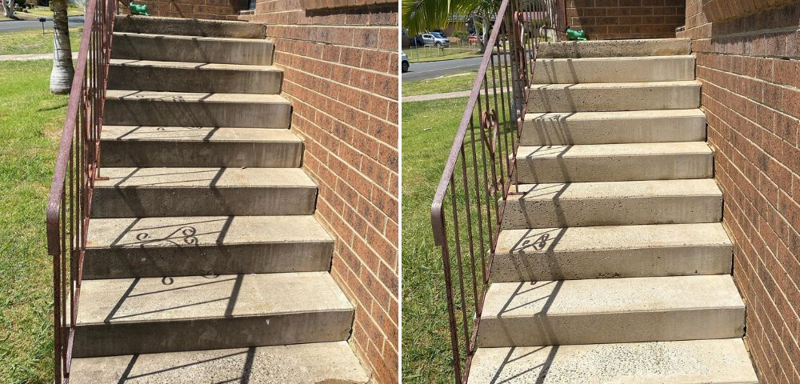
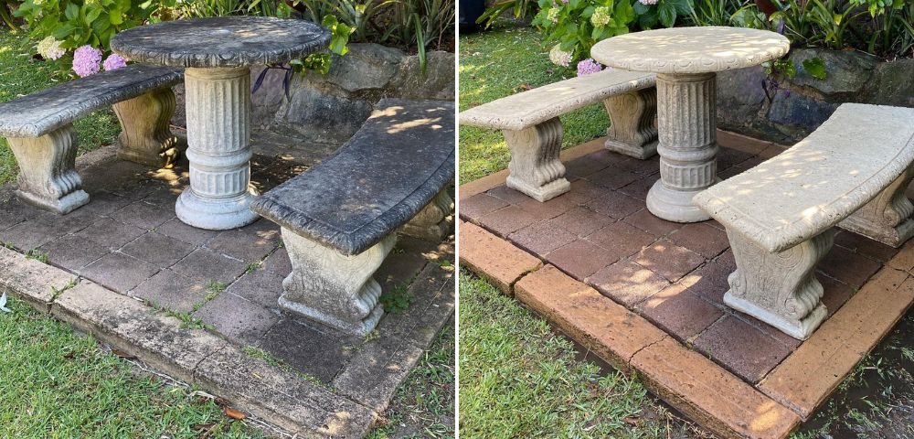

Concrete, bluestone, pavers, wood, vinyl, metal — driveways, patios, decks, fences, walkways, cars, even the trash cans. Local pressure washing in Mamaroneck & Westchester. We show up, we clean it, it looks new. No hype, no contracts — just honest prices.
Call or Text — Free Quote Today — 513-581-1419Driveways are just our most-asked job. Anything that lives outside and gets grimy, we can clean. Text a photo and we'll tell you straight what we can do — and what we'd leave alone.
Not on the list? Text us anyway — if we can't do it, we'll say so and point you to someone who can.
We don't take card details on this page — nothing to type in, nothing to get wrong. Call or text us and we'll send back a secure checkout link for your exact amount, made out to your job.
Haven't had your wash yet? Every job starts with a free quote — text us your address and a photo, we'll reply today.
Three steps, no surprises.
Send a photo of whatever needs washing — driveway, patio, deck, fence, car. We reply with a firm price, usually the same day. No sales pitch.
You get a time window, we arrive, and the job is done in one visit — most take 1–3 hours.
We walk the job with you before we leave. Not happy with a spot? We re-wash it free.
Pressure washing is simple: dirt in, clean out. Same surface, same angle — here is what a single pass does.





The questions we get before most first jobs.
No. Tell us where the hose bib is (or leave a gate code) and we'll handle the whole job and text you after photos. You pay when you're happy — cash, card, or the payment link we text you.
Most driveways take 1–3 hours. You get a time window when you book, and we text you when we're on the way.
No — we use the right pressure for the surface. Concrete gets a heavier wash; brick, wood, and older surfaces get a gentler one. That's why we ask for a photo first.
Often, yes — we treat stains with the right cleaner before washing. Some old rust stains stay faint, and if one won't come out we'll tell you straight before we start.
No — driveways are just what we get asked for most. Patios, decks, fences, walkways, brick, siding, pool decks, cars, boats and trash cans are all normal jobs for us. If it's outside and it's grimy, text a photo and we'll tell you straight whether we can clean it.
Call or text — free quote today, no pressure.
Call / Text 513-581-1419 for a Free Quote